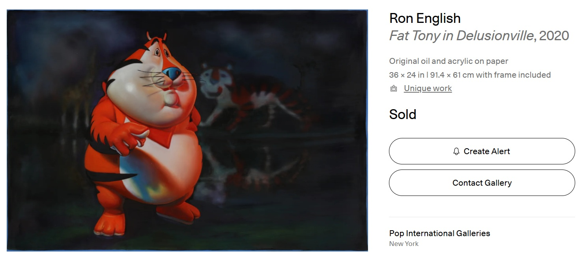
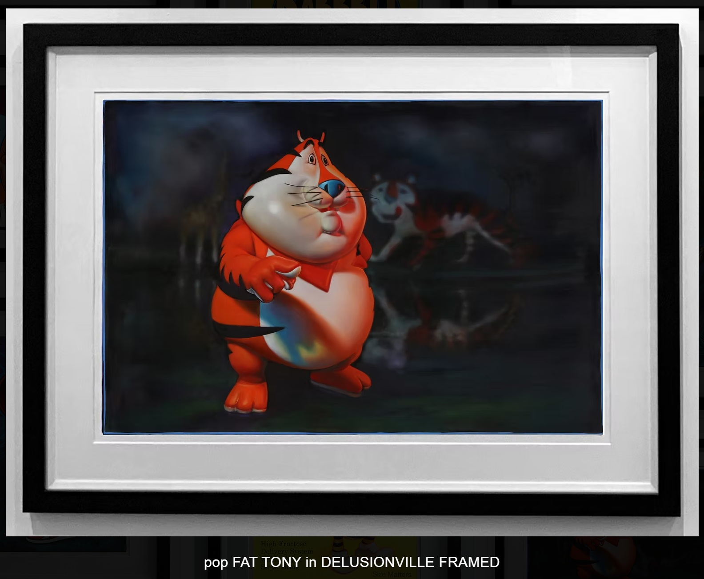

Exhibitions
POPaganda on Paper, Pop International Galleries, New York, New York, US, September 17–October 15, 2020.
Provenance
Private collection.
Notes
This work appears on Artsy’s artwork page as Fat Tony in Delusionville, where it is listed as a 2020 original oil and acrylic on paper measuring 36 × 24 inches (91.4 × 61 cm), unique, hand-signed by the artist, with frame included.
Pop International Galleries’ product page lists the work as original oil and acrylic on paper, 24 × 36 inches unframed.
Artsy lists the work as hand-signed by the artist; no signature is visible on the front in the available documentation.
This painting references Tony the Tiger, the Kellogg’s Frosted Flakes mascot.
This work appears on Artsy’s artwork page as Fat Tony in Delusionville, where it is listed as a 2020 original oil and acrylic on paper measuring 36 × 24 inches (91.4 × 61 cm), unique, hand-signed by the artist, with frame included.
Pop International Galleries’ product page lists the work as original oil and acrylic on paper, 24 × 36 inches unframed.
Ancillary Documentation



